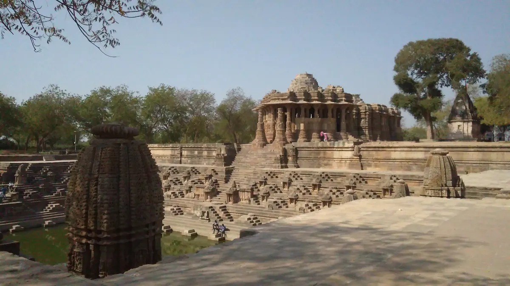

Modhera Sun Temple from Ahmedabad: A Structure-First Day-Trip Guide

Start with the three-part composition
Gujarat Tourism describes the 11th-century Modhera Sun Temple as a complex of three principal elements: the stepped Surya Kund, the Sabha Mandap or assembly hall, and the shrine. Read them in that order from the approach rather than rushing straight to close-up carving. The alignment is the essential idea. The water structure creates distance and reflection, the open hall prepares the transition, and the shrine anchors the far end. A first wide view gives every later detail a place, which is especially useful if you are explaining the monument in a reel or photo essay.
Study the Surya Kund as designed space
The rectangular tank is not empty foreground. Gujarat Tourism notes its stepped geometry and the many small shrines arranged around it. Follow the repetition of horizontal terraces, diagonal stair lines and vertical shrine forms. From a safe public viewpoint, make one frame that includes both the kund and the temple so the axial relationship is clear. Do not step onto restricted masonry or imitate risky poses seen in social posts. Scale can be conveyed with railings, steps and distant visitors without directing anyone into a fragile area.
Move from assembly hall to shrine
At the Sabha Mandap, change from wide compositions to details: look at how columns divide the space, how brackets meet beams and how carved figures are placed within an architectural system. Gujarat Tourism connects twelve Aditya representations with the months of the year; use that official wording carefully rather than claiming every figure is easy to identify unaided. At the shrine, respect barriers and remember that the original image of the sun deity is no longer present. The experience today is architectural and archaeological, not a staged reconstruction.
Build a realistic route from Ahmedabad
The official tourism pages place Modhera roughly 99–101 kilometres from Ahmedabad by road and identify Mehsana as the nearest railway connection. Treat those figures as planning references, not guaranteed travel times. Traffic, stops and onward transport can change the day substantially. If combining Modhera with Patan, decide in advance whether architecture or shopping is your priority; trying to document both in depth can make the route rushed. Keep the return journey flexible and check the latest local access information before departure.
Plan for heat, stone and exposure
Much of the visual experience is outdoors, so sun protection, drinking water and unhurried walking matter. Sandstone can appear flat in harsh overhead light and steps demand attention even when you are looking through a camera. Keep bags compact, avoid placing equipment on carved surfaces and do not use drones without explicit permission from the competent authority. If you plan to see heritage lighting or a projection presentation mentioned by Gujarat Tourism, verify the current schedule directly; special programmes and technical operations can change.
Photograph the monument without false claims
A good visual sequence is evidence-led: establishing view, kund geometry, Sabha Mandap structure, one carving detail and a final relationship shot. State the date of capture. Avoid captions that promise an equinox beam, a live ritual or a show unless you personally documented it and verified the context. Historical sites often accumulate attractive legends online, so keep the published facts tied to the official record. Describing what the viewer can actually see is not less creative—it makes the story more trustworthy.
Connect the trip to local value
Vocal for Local can be practical on a day trip. Use local transport providers where appropriate, buy from identifiable makers or authorised outlets, and ask before filming shopkeepers or artisans. If you combine the temple with Patan textiles, learn the difference between double-ikat Patola and printed lookalikes before making a purchase claim. A useful Beyond Soch guide should help the audience notice design, plan responsibly and direct spending toward transparent local work, without pretending that one short trip makes anyone an expert.